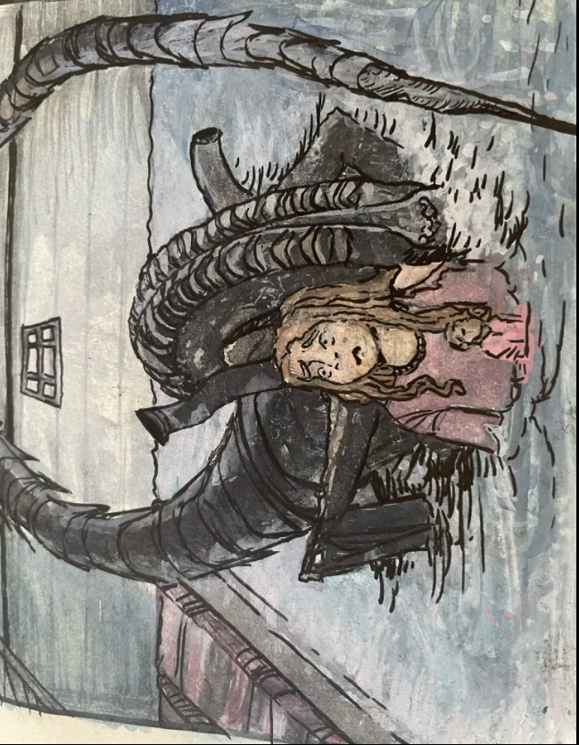
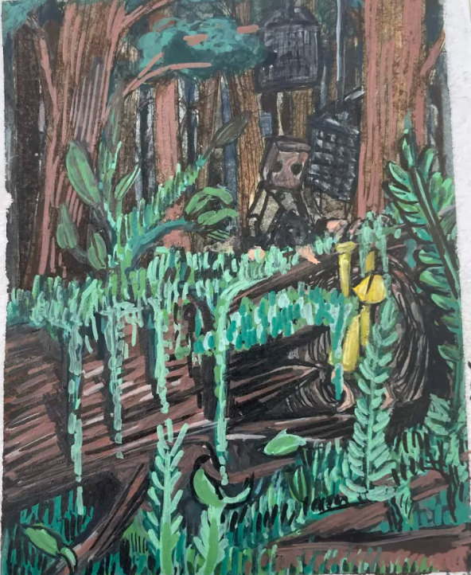
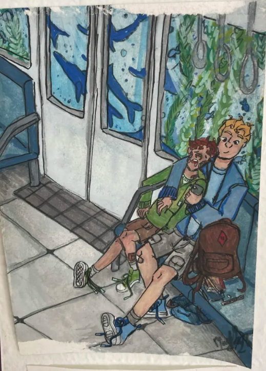
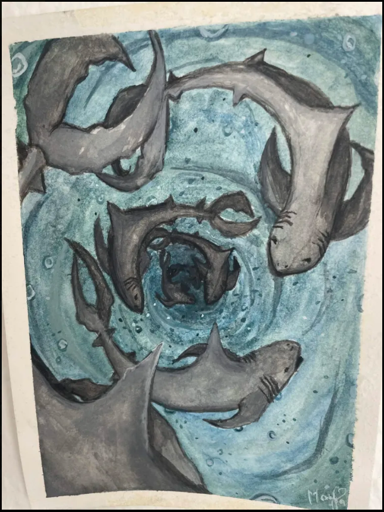
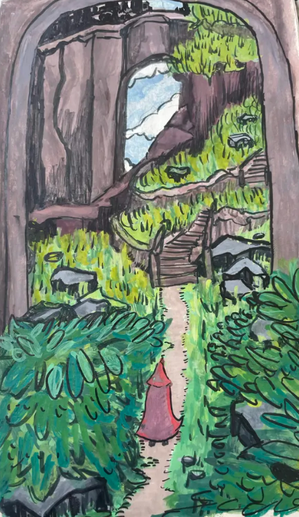
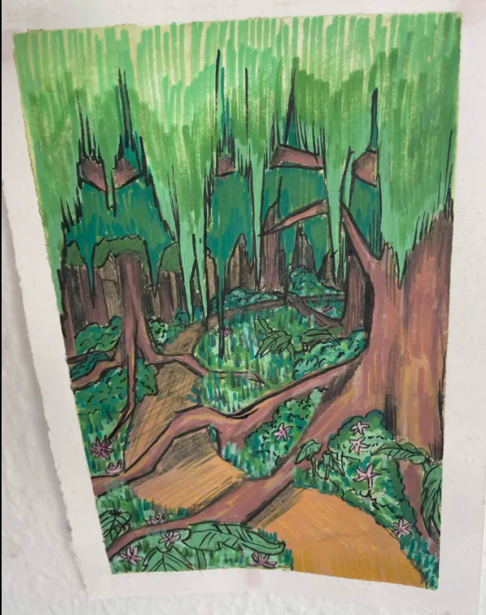
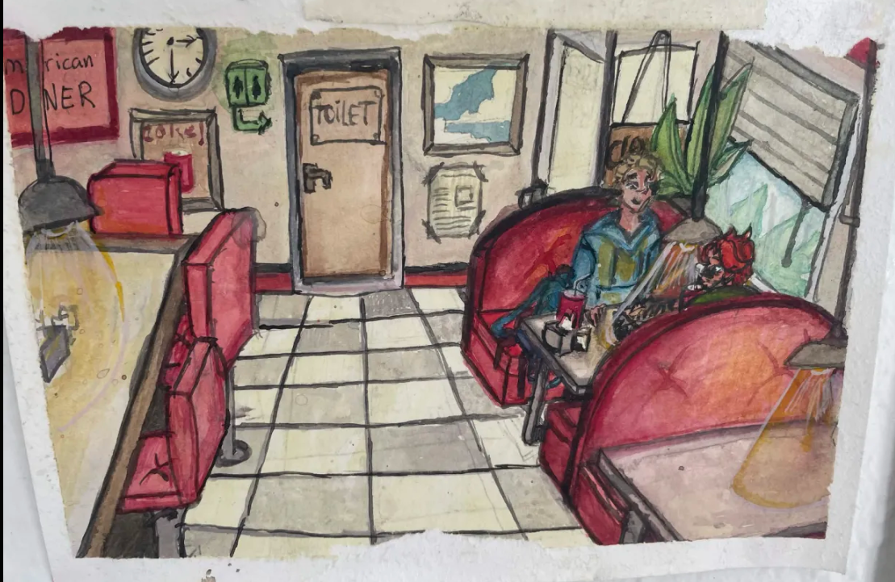
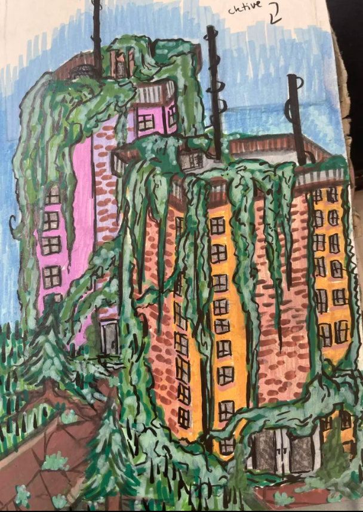
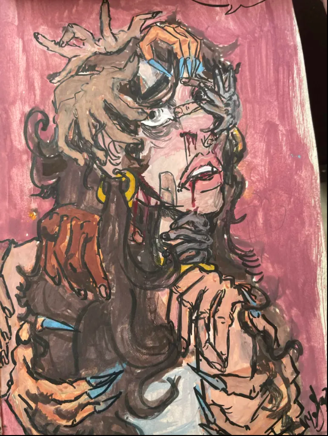

De fleste af mine malerier er malet med noget der kaldes guache, hvilket er en blanding mellem akryl maling og akvarel maling.
Jeg maler en masse forskellige emner, men primært noget med hænder, mennesker og baggrunde.
Dette skyldes en interesse i at blive baggrunds designer for spil i fremtiden, derfor føler jeg at jeg bliver nødt til at øve mig på disse ting.
Noglegange laver jeg også tegninger der bare er strej-tegninger, som man kan se helt neders i bunden, disse tegninger gør jeg mere bare for sjov - for mit eget forbrug.
Jeg laver for det meste strejtegninger fordi jeg syntes det er spændende at man kan lave en hel teging og få hele tegningen til at se forskellig ud via. et par "få" strejer.
Nogle gange laver jeg fan-art, fordi jeg enten er facineret omkring selve filmen/spillet/showet, eller fordi jeg elsker det medie. I nogle af mine tegninger kan man se hvad jeg er fan af.








